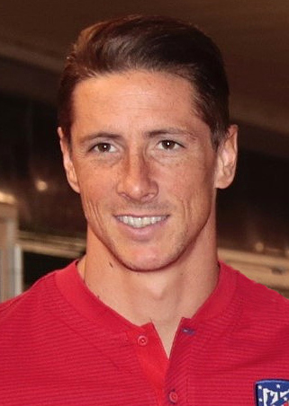

Top 3
1🥇
 Cristiano RonaldoPortugal · Manchester United🏆 2
Cristiano RonaldoPortugal · Manchester United🏆 2
- ■Knockout stage EURO 20081 Goal, 1 Assist
- 🏆UEFA Champions League 2007/088 Goals, 1 Assist
- 🏆Premier League 2007/0831 Goals
- ■European Golden Shoe31 Goals
2🥈
 Lionel MessiArgentina · Barcelona🏅 1
Lionel MessiArgentina · Barcelona🏅 1
- 🏅Olympic gold medal 2008
- ■Semi-finals UEFA Champions League 2007/086 Goals, 1 Assist
- ■Rank 3 La Liga 2007/08
3🥉

Fernando TorresSpain · Liverpool🏆 1
- 🏆EURO 20082 Goals, 1 Assist
- ■Semi-finals UEFA Champions League 2007/086 Goals, 0 Assists
- ■Rank 4 Premier League 2007/08
Rank 4 and below 27 players
- 4Iker CasillasSpain · Real Madrid
- 5XaviSpain · Barcelona
- 6Andrey ArshavinRussia · Zenit Saint Petersburg
- 7David VillaSpain · Valencia
- 8KakáBrazil · AC Milan
- 9Zlatan IbrahimovićSweden · Inter Milan
- 10Steven GerrardEngland · Liverpool
- 11Marcos SennaSpain · Villarreal
- 12Emmanuel AdebayorTogo · Arsenal
- 13Wayne RooneyEngland · Manchester United
- 14Sergio AgüeroArgentina · Atlético Madrid
- 15Frank LampardEngland · Chelsea
- 16Franck RibéryFrance · Bayern Munich
- 17Samuel Eto'oCameroon · Barcelona
- 18Gianluigi BuffonItaly · Juventus
- 19Michael BallackGermany · Chelsea
- 20Cesc FàbregasSpain · Arsenal
- 21Didier DrogbaIvory Coast · Chelsea
- 22Sergio RamosSpain · Real Madrid
- 23Nemanja VidićSerbia · Manchester United
- 24Edwin van der SarNetherlands · Manchester United
- 25Ruud van NistelrooyNetherlands · Real Madrid
- 26Karim BenzemaFrance · Olympique Lyonnais
- 27PepePortugal · Real Madrid
- 28Luca ToniItaly · Bayern Munich
- 29Rafael van der VaartNetherlands · Hamburg/Real Madrid
- 30Yuri ZhirkovRussia · CSKA Moscow
Photos: Bryan Berlin / WikiPortraits (CC BY-SA 4.0). View all image credits